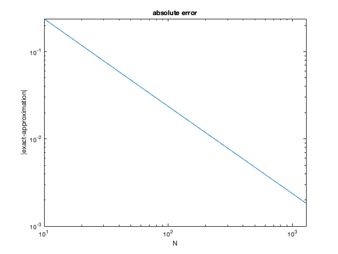

Contents
Homework 1
CS375 Juan Alejandro Ormaza August 31 2021
clc; clear all; format long g
Problem 1
z=[10 40 70 90 20 30 50 60]; z(1:3:7)=zeros(1,3) z([3 4 1])=[]
z =
0 40 70 0 20 30 0 60
z =
40 20 30 0 60
Problem 2
part a
% i. t=1:4:25 t=linspace(1,25,7); t % ii. x=-11:1 x=linspace(-11,1,13); x
part b
%i. v=linspace(-10,-8,6) v=-10:2/5:-8; v %ii. r=linspace(0,1,5) r=0:1/4:1; r
t =
1 5 9 13 17 21 25
x =
-11 -10 -9 -8 -7 -6 -5 -4 -3 -2 -1 0 1
v =
Columns 1 through 3
-10 -9.6 -9.2
Columns 4 through 6
-8.8 -8.4 -8
r =
Columns 1 through 3
0 0.25 0.5
Columns 4 through 5
0.75 1
Problem 3
given
t=0:0.1:1; y=sin(pi*t);
a)
sum(t)
b)
sum(t.*y)
c)
sum(t.^2)
ans =
5.5
ans =
3.15687575733752
ans =
3.85
Problem 4
x=linspace(0,1,1000); x2 = x.^2; x3 = x.^3; xexp = exp(x); subplot(2,2,1) hold on plot(x,x) plot(x,x2) plot(x,x3) plot(x,xexp) hold off grid on legend('x','x^2','x^3','e^x') title('plot') xlabel('x') ylabel('y') subplot(2,2,2) semilogy(x,x,x,x2,x,x3,x,xexp) grid on legend('x','x^2','x^3','e^x') title('semilogy') xlabel('x') ylabel('log(y)') subplot(2,2,3) semilogx(x,x,x,x2,x,x3,x,xexp) grid on legend('x','x^2','x^3','e^x') title('semilogx') xlabel('log(x)') ylabel('y') subplot(2,2,4) loglog(x,x,x,x2,x,x3,x,xexp) grid on legend('x','x^2','x^3','e^x') title('loglog') xlabel('log(x)') ylabel('log(y)')
Advantages and disadvantages of using plot, semilogy, semilogx, loglog:
- Plot: plot is used more widely and can easily describe the behavior of polynomic functions. It is better to use a logarithmic function for exponential and quick growing functions.
- semilogy: works well with functions that grow quickly in the y axis, otherwise it could cause trouble to understand these graphs.
- semilogx: works well with functions that grow quickly in the x axis, otherwise it could cause trouble to understand these graphs.
- loglog: works well with functions that grow quickly in both the x and y axis. yields linear results that are easy to understand. However, it does not give too much of a description of the function's behavior.
problem 5
%%%part a %anonymous function for sin(x) sin=@(x) sin(x); % calls the function my_mean to estimate the integral between 0 and 2 my_mean(@sin, 0, 2, 100) %%%part b % we create the function my_fun that only receives a vector x and returns % xe^x %%%part c % we want to calculate the integral from -1 to 1 of xe^x using %N = 10, 20, 40, 80, 160, 320, 640, and 1280 N=[10, 20, 40, 80, 160, 320, 640, 1280]; solutions_vector = zeros(1,length(N)); for i=1:length(N) solutions_vector(i)=my_mean(@my_fun, -1, 1, N(i)); end exact_solution = 2/exp(1); absolute_error=abs(exact_solution - solutions_vector);
As N increases the error starts to decrease and the solutions gets closer to the exact solution
figure() loglog(N,absolute_error); title('absolute error'); xlabel('N'); ylabel('|exact-approximation|'); %%%part d % notice how as the N increases the absolut errore decreases. % also notice that the approximation gets closer and closer to 2/e fprintf(' N \t approximation \t absolute error \n'); fprintf('%4.0f \t %4.5f \t %4.5f\n',[N;solutions_vector;absolute_error]);
ans =
1.42711587058324
N approximation absolute error
10 0.49694 0.23882
20 0.61707 0.11869
40 0.67668 0.05908
80 0.70630 0.02946
160 0.72105 0.01471
320 0.72841 0.00735
640 0.73209 0.00367
1280 0.73392 0.00184
